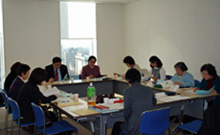

| ■議 題 |
| １． |
埼玉県食品衛生監視指導計画案に対する意見交換を行い、さいたま市・川越市もあわせて、以下４点について要望する事が確認されました。 |
- 輸入食品の残留農薬の検査は国の検査だけでは充分とはいえず、自治体での検査が必要であり、検査体制の充実強化。
- 輸入加工食品も検査対象にする。
- リスクコミュニケーションの内容について、県民の意見を聞くスタンスでの開催。
- ＢＳＥ全頭検査の継続。
|
| ２． |
今後の日程について確認されました。 |
| ３． |
報告・資料提供等 |
 |
（１）2008年度第４回オンブズ会議報告(11/10)
（２）2008年度関東信越厚生局との懇談会報告(11/10)
（３）「国際食料需給と農産物国際貿易、そして食料自給率」報告（12/3）
（４）「食の安全学習会｣～ＢＳＥ全頭検査とリスクコミュニケーション報告(12/4)
（５）関東農政局2008年度｢第２回埼玉県消費者団体との意見交換会｣報告(12/11)
（６）「ご存知ですか動物検疫？～動物の病気を持ち込まないために｣報告(12/15)
（７）ＢＳＥ関連まとめ
（８）平成20年度埼玉県食品衛生監視指導計画(４～６月)監視指導結果
（９）事故米・食品偽装等新聞記事 |
|